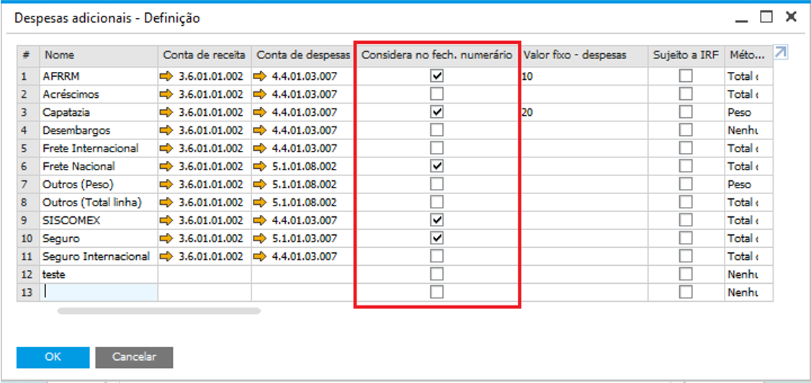
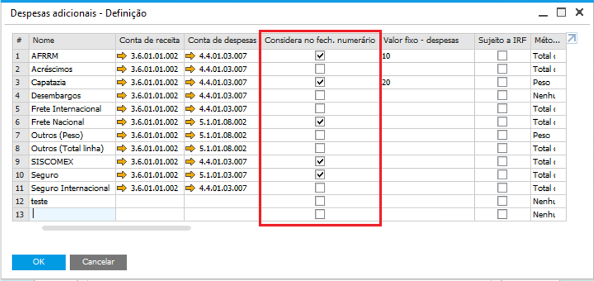

Fechamento Numerário
O fechamento de numerário é um processo em que o despachante encaminha à empresa todas as despesas e impostos pagos por ele, como também os adiantamentos recebidos, com o valor final que pode ser um crédito ou um débito para o despachante.
Os valores necessários para fechamento de numerário são:
Adiantamento de Despachante
NF Nacionalização (Nota Fiscal de Entrada) – Impostos, Despesas Adicionais, Despesa no Custo (adicionado no valor do item)
Despesas de Importação
Para as despesas das telas Despesas de importação - Configuração e Despesas adicionais - Configuração serem consideradas no Fechamento numerário, é necessário que as despesas tenham o flag Considera no fech. numerário marcado.
 

{kind=link}
Ao clicar no botão Fechamento Numerário, será aberta a tela com os detalhes das despesas e impostos pago pelo despachante e o valor do adiantamento já feito para ele.
{kind=link}
Coloque uma data de vencimento e clique em Gerar. A seguinte mensagem será exibida:

BR One :: Processo realizado com sucesso. Lançamento gerado número: x
Após gerar o lançamento, ele poderá ser consultado na tela de detalhes, através do botão […].
{kind=link}
Será gerado um LCM com a diferença calculada no fechamento numerário para o Despachante.
{kind=link}
Se o valor for Credor, isso significa que o valor adiantado a ele foi maior que as despesas de importação no total, e então a conta de crédito será a conta Adiantamentos do cadastro do Despachante e a conta de débito será o código do despachante. Caso contrário, se for Devedor, isso significa que o valor adiantado a ele foi menor que as despesas de importação no total, então a conta de débito será a conta Adiantamentos do cadastro do Despachante e a conta de crédito será o código do despachante.
O processo de Fechamento numerário só poderá ser feito uma única vez. Se o usuário clicar no botão Fechamento Numerário após ele ser criado, a seguinte mensagem será exibida:

BR One :: Este processo só pode ser realizado uma única vez.